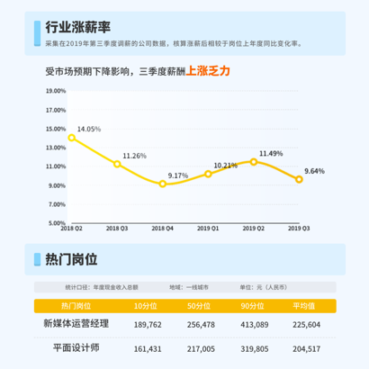
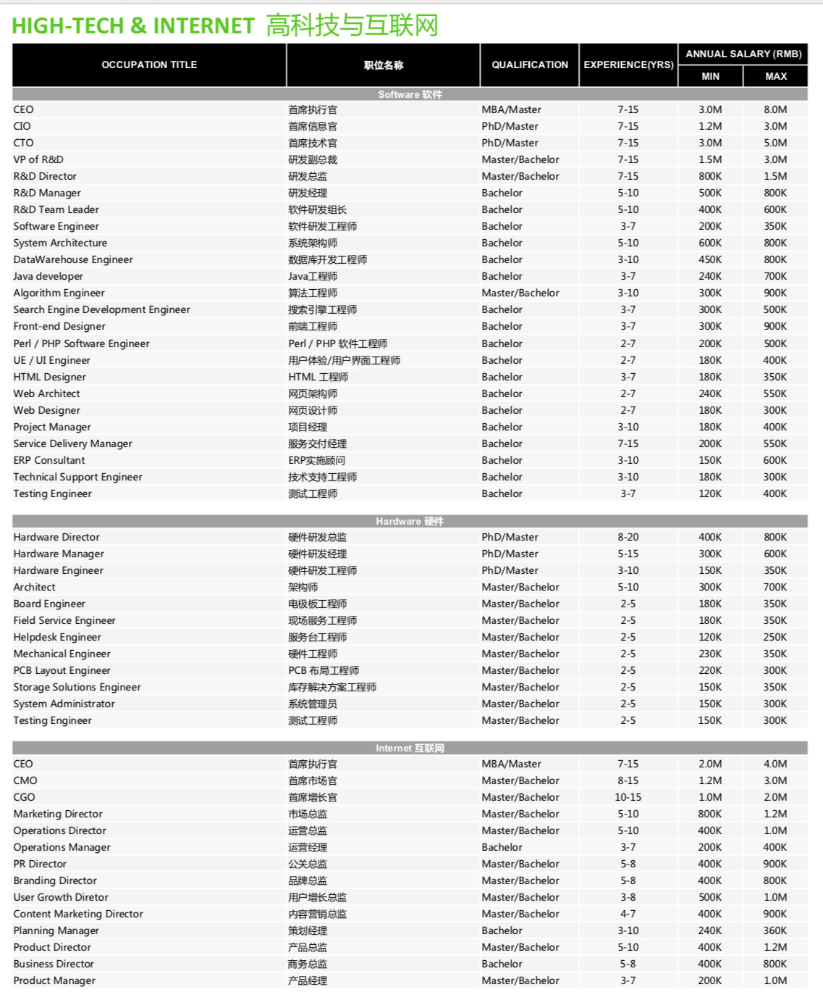

- 00 开篇词：了解面试“潜规则”，从海选中脱颖而出.md.html
- 01 设计一份吸引面试官的简历.md.html
- 02 读懂职位 JD，精准投递简历.md.html
- 03 把握投递简历的黄金时间段.md.html
- 04 做好充分的准备去面试.md.html
- 05 把握面试时的关键点.md.html
- 06 捕捉 HR 微表情，做出应对策略.md.html
- 07 巧妙推销自己的 3 个技巧.md.html
- 08 认清自身实力，明确求职方向.md.html
- 09 判断公司背景，做出合理选择.md.html
- 10 了解行业薪资，清晰找准定位.md.html
- 11 目标明确，阐明沟通.md.html
- 12 工作交接流程福利衔接.md.html
10 了解行业薪资，清晰找准定位
你好，我是你的面试课老师杨宇堃，欢迎进入第 10 课时的内容“了解行业薪资，清晰找准定位”。
清晰找准自己的定位
相信面试到这里你已经在谈薪资了，此时的你是否会有这样的疑惑：我所期望的薪资是否能给到呢？在这里我建议你一定要对自己有清晰的定位，比如可根据你的工作年限、工作经验以及对市场行情等全方位的了解后，才能拿到合理的薪资，也会让企业认为你物有所值。 那如何才能争取比较合适的薪资呢？很多小伙伴会根据身边的朋友来判断自己的薪资是否合理。但是很多人没有考虑到，大家的学历不同、做过的项目不同、所应聘的公司也不同，那么薪资水平也很可能会有较大的差距，所以一定要明确自己的情况是怎么样的。
（1）如果你是应届生
如果你是一个刚刚毕业的小伙伴，如果从事的是基础的岗位一般薪资基本在 4 ~ 8K，但如果选择做程序员，假如学校背景还不错的话，薪资可在 10 ~ 15 K。 不过，不用太在意薪资这一块，毕竟找一个有前景的工作会更重要，建议对自己有一个短期（1~2 年）的职业规划，相信在不久的将来，薪资也会翻倍的。
（2）如果你有工作经验
如果你已经是一个在专业领域工作多年的候选人，行业经验也非常丰富，相信丰富的经验可以为你创造比较高的收入，你可以比对行业的知名公司职级的薪资结构去判断自己的薪资情况。
（3）如果你有项目经验
当然也可能有小伙伴会问，如果我前一家公司的薪资高于市场行情，换一家公司是否需要继续要求增加薪资，还是考虑降薪？ 这个问题我认为可以根据你的项目经验来考虑。如果你的项目经验是行业非常急需而且比较难得的，同时你又做得比较突出，你要求一个合理涨幅，很多公司也是愿意的。但是如果你的工作表现一般，只是一个负责副线项目的人，我认为对你来说很难争取到新的提成，所以不如脚踏实地地去做一个比较稳定的项目，为自己多积累一些相关的经验，也为后面的涨薪做铺垫。
一些行业的薪酬报告
下图是某热门岗位的行业薪酬报告：

图中的一些信息只是一些简单的分析，可以看出 2019 年整个互联网行业的薪资增长并不是很高，相比 2018 年下降了很多。这说明很多公司并没有那么多涨薪的预算，所以在选择公司的时候如果要求过高，很难获得心仪公司的 Offer。 其他岗位的薪资报告，建议你到拉勾招聘网站上搜索多家企业发布的同一职位的薪资范围，通过对比来判断该职位的薪资涨幅，但一般企业为了吸引人才，会将薪资范围提高，所以要酌情考虑。 比如下面是高科技与互联网行业的职位薪资情况：

上面的薪资情况，只是工程师的薪酬范围报告，仅供参考。